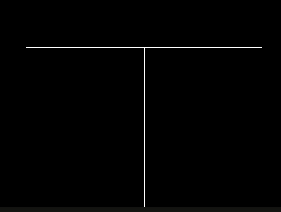

I came across a
youtube video
which showed a way to visualize fractal trees. I watched it while eating dinner and didn’t think much of it at the time. A week or two later, though, I had decided to a do a few more challenges for my
challenges repository
and this was at the top of the list. It is a fairly simple program that has a cool end result seen in figures one and four.
Figure 1: Example tree visualization.
Tools
The aforementioned tutorial used
p5.js
and made it look pretty decent. However, using javascript isn’t something I would do for a personal project that is meant to be fun. As you may have guessed, I decided to use
Python
instead. The next step is to choose a tool to display the end result. My initial thought was to use
matplotlib.
However, the youtube tutorial also had animations. I wasn’t aware of animations being available in matplotlib at the time so I went in a different direction. Instead, I went with
Pygame. I hadn’t used it before, but it I knew it was widely used in the Python community and I could find answers to any of my rudimentary questions online.
Opening a Window
Before we can start visualizing anything, we need a window that we can open and close without crashing. Luckily, there are a lot of sources that can be easily googled including Pygame’s documentation.
The above code is the barebones necessary to get a black screen where nothing happens. It runs until the user closes the window. It works by calling the main function at the start. The main function initializes pygame on line 4 and then proceeds to define the size of the window. On line 9 we give the window a title. Line 12 is interesting because it's purpose isn’t exactly clear on a first glance.
Looking at the
documentation,
you’ll find, “By calling Clock.tick(40) once per frame, the program will never run at more than 40 frames per second." This means we are telling pygame that it should run at most 10 frames per a second. Ten frames per a second is a very slow framerate for most games which aim for sixty, but for our black screen this is absolutely fine. After that we check for a pygame event where the user has quit and mark the boolean done as True. From there we tell pygame to quit and we have a black screen.
Coordinate System and Lines
It's time to draw on the screen. To start we need to know how to draw a line. Luckily, pygame provides a very simple function pygame.draw.line which takes in the screen (line 6 of the code above), the color, the start position (x and y coordinates), the end position, and the width of the line. However, it’s very important to understand how the coordinate system works in the engine before going forward.
Figure 2: Pygame coordinate system.
A graph of how the coordinate system works can be seen in figure two and the source code can be found
here.
As you can see the top left of the screen corresponds to 0,0. The bottom right corresponds to the windows width and height.
Drawing the Root
Now that we have an understanding of the coordinate system in Pygame we can move towards drawing a tree. First we need to draw the root line or base of the tree. To do this we need the start and the end positions. The start position is being supplied to us by the caller but for the first call it will need to be the width divided by two and the height of the screen (line 54 in the section below). The end position will have to be based on the direction of the line and the length.
The direction of the line can be defined with an angle. In our case, pi over two is a natural fit because we want the line to be vertical at the start. The length of our line can be any number we want but it will have to be negative to fit in the coordinate system of Pygame. This could also be accomplished by using a negative angle instead. Drawing the line can be seen in the code below:
Line 3 defines the x position where we use the start position plus the length of the line multiplied by the cosine of the angle. This is pretty common geometry so I’m going to skip explaining it. Line 4 does the same except for the y coordinate and uses sine. From there we define the color and line width and call the draw line function.
Drawing the Tree
Now that we can draw the root, the rest of this problem flows pretty naturally if we implement this recursively. Think of it like we are defining a new base of the tree that branches off the current base. If we change the name of the function draw_line to draw_fractal_tree we now have a clearer name. In the function it should call itself twice, since this is a fractal tree, with different directions. Before doing this, though, we need to make sure the recursion stops.
We could accomplish this by taking a max iterations approach. We could pass an integer on each call where we subtract it by one every time on the next call. Once the value is less than or equal to zero the function stops calling itself. This is a fine approach, but I believe the next approach, that is about to be described, is more natural fit for the problem.
A more natural approach is to stop recursion based on the length of the line. Since drawing every branch of the tree with the same length would give a pretty weird looking result, we know the length of each branch should decrease on successive recursive calls. In addition, the tutorial also reduced the line length with every recursive call. To draw the tree we need to define how long the line segment on each call should be. Therefore, if we set a minimum line length we can know when the recursion should stop; this value is on line 14. Line 10 defines the maximum line length. In both cases, you’ll notice that the values are negative. As you’ll recall from the coordinates in figure two, the bottom of the screen is the height value, 600. Since we want to draw from the bottom of the screen to the top, we need to move towards 0 rather than away. Rather than creating a coordinate system on top of the existing one with conversions, I decided making the numbers negative would be simpler.
Line 25 multiplies the current line length by a constant which should be between 0 and 1. This makes it so the value will approach 0 over time. Line 27 then checks to see if the line length is too small to continue. If not the function ends without an recursive calls. Else we call the function twice. You’ll notice that lines 28 and 29 are exactly the same except for a plus and a minus symbol. These are both using the delta_angle variable which is passed into the function.

Figure 3: Example fractal tree where delta_angle is set to pi over two.
The delta_angle variable is what defines how far direction changes for the next branch. If it was set to 0, then you would see only a straight line. If it was set to pi over two, ninety degrees, then you get two perpendicular lines seen in figure three.
With the tree implemented, all we have to do is make a few changes to our main function to see the results. The first change is in the for loop between lines 45 and 47 where the escape key now quits the window. First a check for a keydown is done and if that is true then a check for the escape key is done. Lastly, below the for loop, the screen is set to black and the tree is drawn. The flip call will update the entire display.
frommathimportpiimportpygameimportmathBLACK=(0,0,0)WHITE=(255,255,255)MIN_ANGLE=0MAX_ANGLE=piLINE_LENGTH=-160LINE_LENGTH_DIVISOR=2.2/3.0LINE_WIDTH=1MIN_LINE_LENGTH=-2defdraw_fractal_tree(screen,start_pos,line_length,delta_angle,current_angle):end_position=[start_pos[0]+(line_length*math.cos(current_angle)),start_pos[1]+(line_length*math.sin(current_angle))]pygame.draw.line(screen,WHITE,start_pos,end_position,LINE_WIDTH)line_length*=LINE_LENGTH_DIVISORifline_length<MIN_LINE_LENGTH:draw_fractal_tree(screen,end_position,line_length,delta_angle,current_angle+delta_angle)draw_fractal_tree(screen,end_position,line_length,delta_angle,current_angle-delta_angle)defmain():pygame.init()size=[800,600]screen=pygame.display.set_mode(size)pygame.display.set_caption("Fractal Tree")done=Falseclock=pygame.time.Clock()whilenotdone:clock.tick(10)foreventinpygame.event.get():ifevent.type==pygame.QUIT:done=Trueifevent.type==pygame.KEYDOWN:ifevent.key==pygame.K_ESCAPE:done=True# Clear the screen and set the screen backgroundscreen.fill(BLACK)# draw fractal tree at bottom middle of the screen with the first line# draw straight up at a 90 degree angledraw_fractal_tree(screen,[size[0]/2.0,size[1]],LINE_LENGTH,pi/5.0,pi/2.0)# Go ahead and update the screen with what we've drawn.# This MUST happen after all the other drawing commands.pygame.display.flip()pygame.quit()if__name__=='__main__':main()
Animating the Tree
What we have is pretty cool but with a few simple changes we can have the more impressive result seen in figure four. To accomplish this, we have to update the delta_angle every frame. In addition, we need to add something to handle when delta_angle has gone too far in one direction and start moving it back the other way.
Figure 4: animated fractal tree.
To update the delta_angle we can can use a simple lerp seen below. This will find the value between the minimum and maximum based on the percent. Therefore if the percent is 0 it will return the minimum. If the percent is 1 it will return maximum.
The other piece needed is a similarly simple function. The variable current_step is the percentage between 0 and 1 that is used in the lerp function. increment is how much the step should increase every call and can be configured. direction is either -1 or 1 and makes it so the increment is either positive or negative depending on which way the tree is moving. The rest just makes it so percent stays between 0 and 1 and moves between the two over time.
With that added we can update the main function to have two variables current_step and direction. The lerp function is used for the delta_angle in the draw_fractal_tree call. After drawing, we call the update_step which updates the step and direction for the next frame.
The source code of the project can be found
here.
You’ll notice I separated everything out a bit and added a config file to make it easier to modify behaviour.
defmain():# Initialize the game enginepygame.init()# Set the height and width of the screensize=[800,600]screen=pygame.display.set_mode(size)pygame.display.set_caption("Fractal Tree")#Loop until the user clicks the close button.done=Falseclock=pygame.time.Clock()current_step=0direction=1whilenotdone:# This limits the while loop to a max of 10 times per second.# Leave this out and we will use all CPU we can.clock.tick(10)foreventinpygame.event.get():ifevent.type==pygame.QUIT:done=Trueifevent.type==pygame.KEYDOWN:ifevent.key==pygame.K_ESCAPE:done=True# Clear the screen and set the screen backgroundscreen.fill(Config.BLACK)# draw fractal tree at bottom middle of the screen with the first line# draw straight up at a 90 degree angledelta_angle=lerp(Config.MIN_ANGLE,Config.MAX_ANGLE,current_step)draw_fractal_tree(pygame,screen,[size[0]/2.0,size[1]],Config.LINE_LENGTH,delta_angle,pi/2.0)# Go ahead and update the screen with what we've drawn.# This MUST happen after all the other drawing commands.pygame.display.flip()current_step,direction=update_step(current_step,Config.STEP,direction)